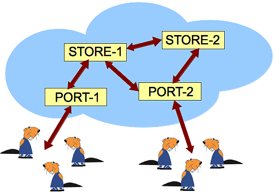
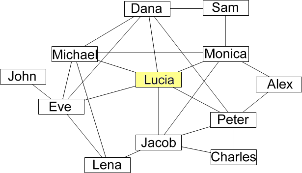
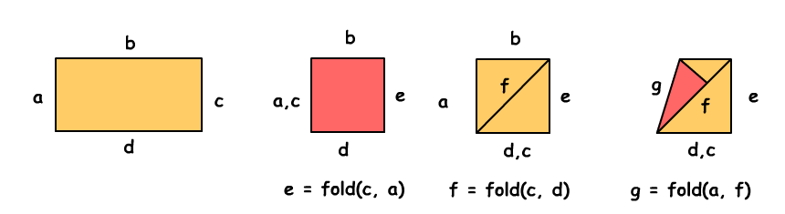

Though there is no need to prepare for the contest, you might want to get a feel for the style of the Beaver tasks. There are three sample questions shown below to do so:
The Castorians store their data in a cloud of four interconnected server computers. The picture shows all the connections between the servers.
- For a higher data safety all data is stored on both store servers STORE-1 and STORE-2.
- For a higher access probability all data is accessible through both port servers PORT-1 and PORT-2.
- The data is stored only on store servers and port servers do not store any data.
- STORE-1 is accessible through STORE-2 and vice versa.
Which statement is FALSE ?
Answers:
A) If STORE-1 and PORT-2 are destroyed then all Castorian data is inaccessible.
B) If STORE-2 and STORE-1 are destroyed then all data in the Castorian cloud is lost.
C) If PORT-1 and PORT-2 are destroyed then all Castorian data is inaccessible.
D) If PORT-2 and PORT-1 are destroyed then all data in the Castorian cloud is lost.
Solution:
The answer D is false. If PORT-2 and PORT-1 are destroyed then all data in the Castorian cloud is inaccessible, but not lost.
It's Informatics
For any data there are risks to become inaccessible for some time, or to get lost definitively. If you manage the storage of your data yourself, you decide yourself, what risks you take. If you transfer the responsibility for your data to an Informatics service company, you should know what risks they take. Besides loss and inaccessibility there are many more risks. E.g. your data might be copied and misused by someone, so your privacy is hurt. Your data might be changed maliciously, so you cannot trust it anymore. Is the careless "cloud" metaphor just a commercial trick to obscure from you the many risks you take when giving away the responsibility for your data?
Lucia and her friends are registered in a social network. Here are Lucia's friends and their friends.
A line means friendship between two people. For example Monica is Lucia's friend but Alex is not Lucia's friend.
- If someone shares a photo with some of his/her friends then those friends can also comment on it.
- If someone comments a photo then all his/her friends can see the comment and the photo, but cannot comment on it unless they originally could.
Lucia has uploaded a photo. With whom can she share it if she does not want Jacob to see it?
Answers:
A) Dana, Michael, Eve
B) Dana, Eve, Monica
C) Michael, Eve, Jacob
D) Micheal, Peter, Monica
Solution:
A) is correct. Lucia has 6 friends. Dana, Michael and Eve aren’t friends with Jacob, so they can’t see Lucia’s photo by the rule, that if someone comments a photo then all his/her friends can see the comment and the photo.
It's Informatics
Managing access to private information is very important nowadays. When uploading private pictures to the Internet, one always has to think carefully about who might see the picture, even in the future. Many employers today check for additional information about an applicant. Since it is very difficult to actually control who can see a picture, best is never to upload pictures to the Internet except pictures, you would also put on public display at your local bus station or school. The structure displayed in the picture represents a graph. Graphs are an important tool in informatics to represent things like social networks. A simple graph consists only of nodes (representing persons in a social network) and edges (representing friendship relations). Methods to automatically analyze graphs are very useful, not only for social networks but also for example in a GPS application, where crossroads are represented by nodes and the streets between correspond to edges. Then a computer program can use this graph to find the shortest way between two places.
The Beaver has developed a programming language for paper folding. This language can be used to explain how to fold any piece of paper with straight sides. One of the commands in this language is fold .
e = fold(a, b) means:
fold the piece of paper in a way that side a is lying completely on side b. In that way you create a new side, the fold. This line is called e.
Example:
Please note, that the paper remains on the table during folding, and that the length of side b is twice the length of side a.
How does the paper rectangle (a, b, c, d) look like after the execution of these three commands?
e = fold(c, a);
f = fold(c, d);
g = fold(a, f)
Answers:
Solution:
The correct answer is A. The following images explain the execution of the fold-operation step by step.
It's Informatics
Functions are an important concept in programming. A function call is considered to be the start of some activity. Programmers say: The function accepts some parameters (here: two sides), processes some data and returns an object (here: the fold). This is different from the concept of functions in mathematics.